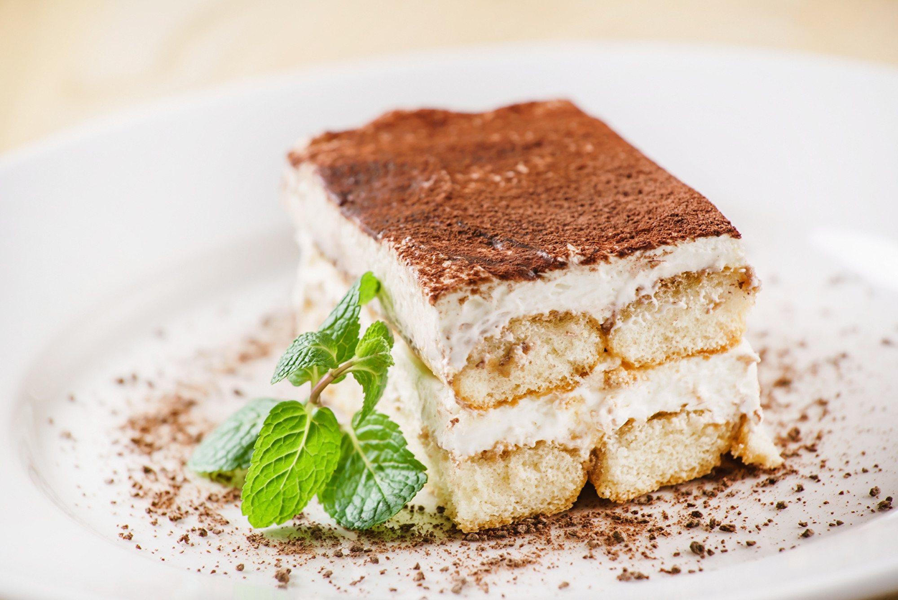

Тирамису

Тирамису - вкусный, нежный, воздушный десерт.
Продукты
Печенье «Савоярди» - 200-250 г
Сыр сливочный «Маскарпоне» - 500 г
Яйца - 6 шт.
Сахар - 150 г
Кофе - 300 мл
Коньяк - 50 мл
Какао-порошок - для украшения
Подготовить продукты для тирамису. Так как яйца в десерте будут термически не обработаны, следует уделить их качеству и свежести особое внимание.
Как приготовить тирамису:
Яйца хорошо вымыть с мылом или средством для мытья посуды (я дополнительно еще обработала хлоргексидином). Аккуратно отделить белки от желтков. Белки пока убрать в холодильник, чтобы с ними потом было удобнее работать.
Желтки хорошо взбить с половиной сахара. Масса должна увеличиться в объёме и побелеть.
Добавить к желткам сразу весь маскарпоне и перемешать на медленной скорости миксера или венчиком.
Очень важно не перевзбить сыр, поэтому я воспользовалась венчиком от блендера, так как на миксере у меня нет достаточно медленной скорости. Если, на ваш взгляд, ваш миксер сильно быстрый, лучше воспользуйтесь венчиком и соедините ингредиенты вручную.
Отдельно хорошо взбить белки, затем соединить с оставшимся сахаром и продолжить взбивать. Белки необходимо взбить до такой степени, чтобы при переворачивании емкости они остались на месте.
Бережно соединяем обе полученные массы между собой при помощи лопатки. Миксером на этом этапе пользоваться не надо, чтобы крем остался воздушным.
В широкой емкости (глубокой тарелке) соединяем остывший крепкий кофе и коньяк. Лучше взять емкость по размеру палочек "Савоярди", чтобы было удобнее работать.
(Алкоголь можно не использовать или заменить на апельсиновый сок, если по каким-то причинам вам его нельзя употреблять.)
Далее собираем десерт тирамису. Каждую палочку печенья окунаем в кофе на секунду, только с одной стороны, и укладываем в форму. Выкладываем половину крема и повторяем процесс ещё раз.
Оставляем тирамису в холодильнике минимум на 8 часов. Перед подачей обильно посыпаем какао.
Можно легко украсить десерт, положив на его поверхность какой-нибудь предмет, например столовый прибор, и только потом посыпать какао.
Приятного аппетита!